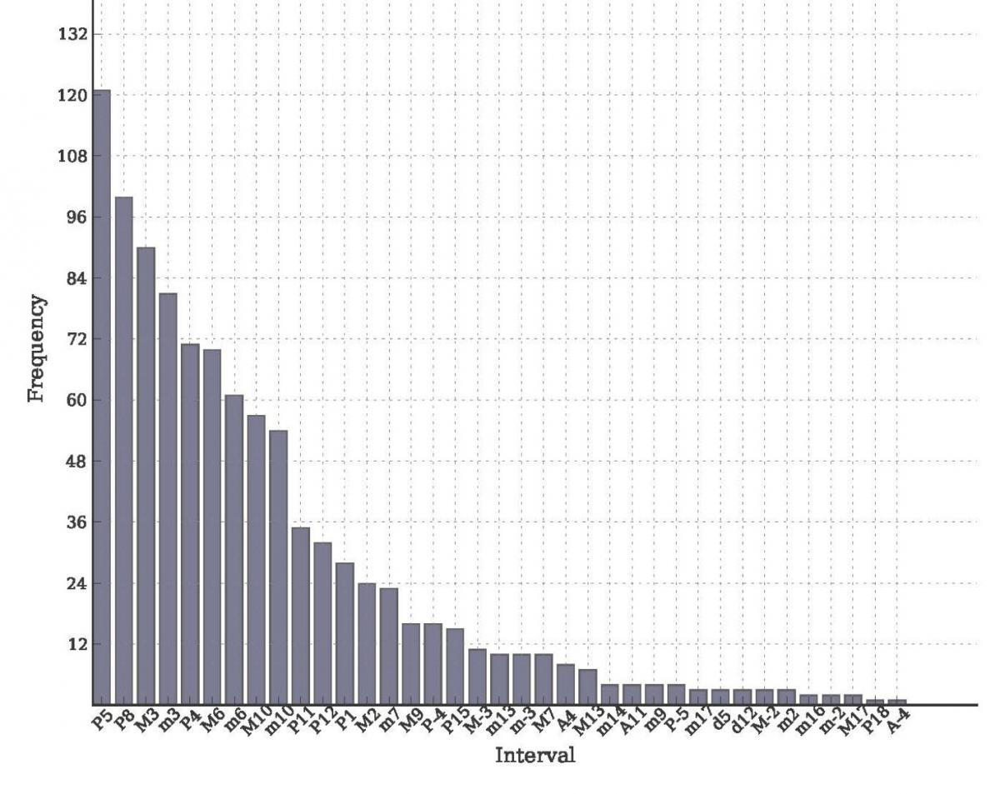
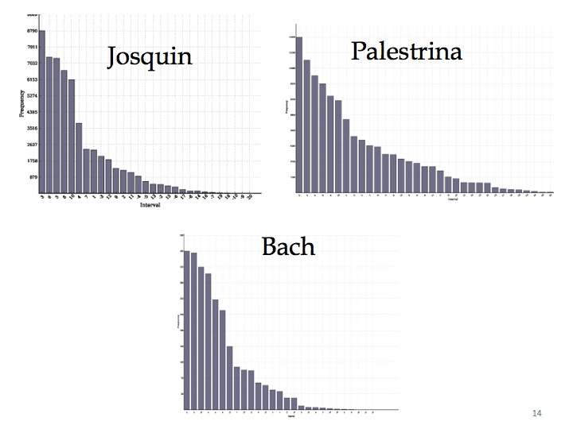
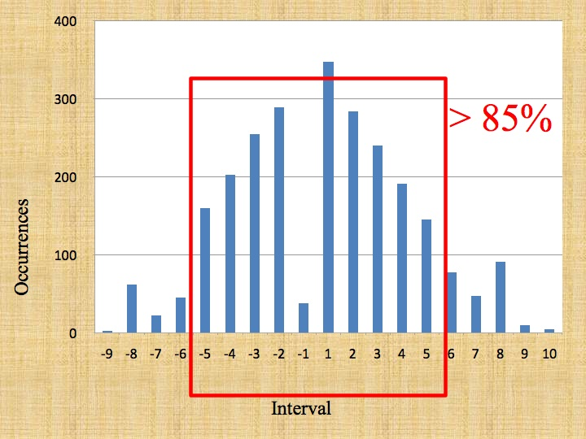
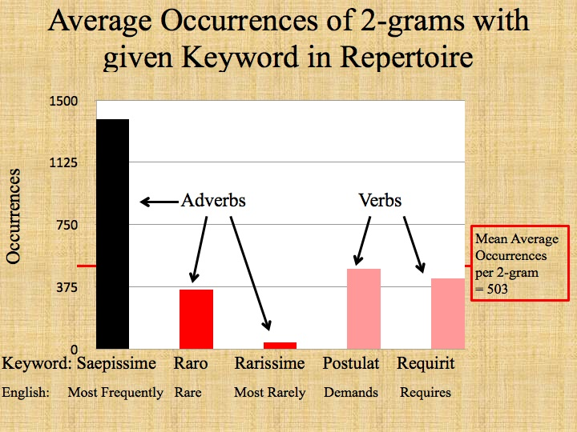

CIRMMT Workshop, September 7th, 2013, Part IV: ELVIS
Posted by Catherine Motuz on September 17, 2013
The afternoon session of the CIRMMT Workshop focused on the ELVIS project, which will continue to be a part of SIMSSA after the Digging into Data challenge officially ends in January, 2014.
Julie Cumming: Introduction to ELVIS (Electronic Locator of Vertical Interval Sequences)
Julie began the session with an introduction to what ELVIS is and how it all got started. Ultimately, ELVIS has the same goal as Rodan:to provide an open-source tool set for the online analysis on music, which can be operated not only by computer programmers, but also by musicologists who would not consider themselves to be tech-savvy.
The idea behind ELVIS dates from a 15th-century music treatise by Johannes Tinctoris, the Liber de arte contrapuncti of 1477. This treatise hashes out the pairs of successive intervals allowed in Renaissance counterpoint, showing not only all possibilities but also judging some better than others. 536 years later, these same interval pairs (and the ones he omitted) are stored in our computers in numeric form as 2-grams, allowing them to be searched and analyzed with a lot less effort. The time and mental processing saved by cataloguing intervals that took Tinctoris years to compile in a few seconds means not that we work less hard though, rather we can extend these searches to extend over many pieces at a time, driving musical analysis into the areas of corpus studies and Big Data.
So far, thanks to the Digging into Data grant, the ELVIS team has assembled a database, developed software to analyze music based on vertical interval successions, and begun using these tools to learn more about the style of composers. This last task involves the quantification of qualitative data, or using statistics to test observations about trends in music. For instance, Julie asked which vertical interval was the most commonly used by Palestrina in the Kyrie of his Missa Dies Sanctificatus. Octaves? Thirds? Fifths? By counting up all of the vertical intervals in all the pieces of Palestrina, we could say that, counting major and minor thirds as separate, the perfect 5th was most common, whereas counting them together, thirds outnumbered every other interval by a great deal. The following graph shows all: 
Counting up intervals already provides a rudimentary way of talking about composer style. In the following slide, Julie showed how the distribution of intervals varies from composer to composer: 
Julie then went on to explain a more sophisticated way of analysing style than simply counting intervals, producing a table of the most common 3-grams for the composers Dufay, Josquin, and Palestrina. It was clear that while some progressions were shared by two or even all three composers, other progressions were common in one and less common or even rare in the others. This kind of sophisticated analysis represents a new way of analyzing composer style, and the first results were quite promising.
This research is not only useful in analyzing style on a theoretical level. Statistics of what is common and what is not will eventually help OMR systems automatically check for errors. When OMR systems such as Aruspix take the step of scoring up the music of partbooks, the ability to tell what is and isn’t normal will allow these systems to correct alignment errors automatically rather than depending on users.
Christopher Antila: Introduction to VIS software
The program that Julie used for the above analyses is called VIS, and was developed primarily by Christopher Antila and Jamie Klassen. Christopher explained the its development process: four times or so, user feedback and becoming a better coder prompted the VIS team to rewrite the program from scratch. As Christopher put it, making the system more efficient each time allowed it to “fail faster,” resulting in optimized returns and what is now quite a robust program.
Christopher began by learning python and becoming a music21 expert. Then he had to program queries that would index and run experiments on pieces using the tools provided by music21. Finally, the team had to develop multiple interfaces for using VIS, including both a graphical user interface (GUI) and an API. Because of the large amount of processing time equired, developers have experimented with various ways of dividing up queries for multiprocessing. VIS makes use of many components other than music21: it uses VisTrails for workflow management, Deducer for graphical interface for stats analysis and visualization, pandas for speedy data analysis, Abjad, music21 and Lilypond for score rendering, django for the web interface, Celery for multiprocessing, Mock for testing, Haskell for various other things and Supercollider for sonification. One could say that VIS embodies the DDMAL programming strategy of using the tools out there—taking technology further rather than reinventing the wheel.
Jamie Klassen: Web interface for VIS
The next step for the ELVIS project, Jamie explained, is to get VIS up and running on the web. There are a number of reasons why this should happen, and a number of things to think about when working out how this should happen.
As to why, there are a lot of advantages to a web-based system. The first is that servers are bigger and faster than personal computers, and as VIS needs a lot of storage and processing power, it makes sense to give over the heavy lifting to a server. The second is that while a desktop program has to be configured to work in numerous operating systems (Mac OS, Windows, Linux etc.), programming for a browser allows the coder to circumvent this issue. Web applications are also trendy, presumably because they allow anyone, anywhere to partcipate in a given project, and in this case would allow VIS to eventually be integrated into Rodan. It can also be more integrated with ELVIS, importing files directly from the database into the analyzer, rather than requiring users to download them from one site and re-upload them to another.
As to how, the web version of VIS presently uses knockoutjs to mimic the desktop “wizard” step-by-step interface, but will eventually evolve to allow the user to interact with data more instantaneously, showing continuous updates and the process of all steps being taken toward a single query. It uses django for the backend, which matches the language of the ELVIS database and uses the python programming language, just like music21. It also uses a Model-View-Controller framework, which means that different levels of the program are kept separate enough that it is possible to change one without adjusting the other. The versatility of this system will allow it to expand more easily. Future developments might include advanced statistics models such as n-gram analysis and the construction of Markov chains. Using machine learning, VIS could learn to guess the composer of a piece based on characteristic interval successions.
These future expansions prompted Ryan to ask if VIS will eventually make use of multiprocessing with a distributed system. Ichiro answered that, thanks to the supercomputer at Calcul Québec, we have access to an almost infinite amount of processing power.
Alexander Morgan: Testing Tinctoris
Alex decided to take ELVIS back to its roots and use it to test Johannes Tinctoris’ 1477 ideas about music. Tinctoris not only listed interval pairs, but implied that certain ones would statistically outnumber other ones, either by using verbs (requirit, postulat) to describe how one motion requires the next, or adverbs (saepissime, raro, rarissime) to classify pairs as wholes.
Alex began by looking at Tinctoris’ list, which in theory outlined all possibilities of two successive consonant intervals that followed the rules of avoiding parallel perfect motion, that stayed within the range of a triple octave, and which involved melodic motion smaller or equal to a perfect fifth. Alex discovered that of all the possibilities remaining, for all the pages upon pages of lists, Tinctoris in fact only gets through three quarters of them. Which ones were omitted? He noted that no progressions involving unisons were omitted, but many were omitted which involved the use of a vertical sixth—an observation that complies with Tinctoris’ writings on the desirability of each of the two intervals. Indeed, Tinctoris calls the unison “The fountain and origin of all concords,” while the vertical sixth he described as having “by the judgment of my ears…have more asperity than sweetness.” A few interval pairs involving 8ves were also left out, such as the motion from a twelfth to an octave. Over one hundred years later, Thomas Morely singles out this progression as crass, calling it “hitting the eight on the face.

Alex then went on to the trickier task of trying to see if there was method to Tinctoris’ use of language in describing the frequency of successive interval pairs. He found that verbs such as “postulat” (“demands”) were inconsistent indictators as to the popularity of 2-grams, while adverbs such as “saepissime” and “rarissime” (“most frequently” and “most rarely”) did in fact accurately describe the statistics churned out by VIS.

One of the frustrations about Renaissance theorists is that many of them present outdated ideas about how music works—even what they understood to be ancient Greek ideas—as valid in their own day. Alex’s study showed that Tinctoris was not only a very well-read man as we all knew, but refreshingly, that he was also very in touch with the music of his own time.
Alex finished by stating that his rich data set still poses many questions to be answered: How do interval pairs relate to mode? Is there any relationship between common pairs and genre, or even of composer style? He will continue to pore over his data and we look forward to hearing what he comes up with!
Julie Cumming: Another lesson from Lassus: Quantifying contrapuntal repetition in the Duos of 1577
Julie finished off the workshop by giving a talk co-authored with Peter Schubert and originally delivered at the Med-Ren conference in July. The talk was called “Another Lesson from Lassus,” and was based on two previous articles, Peter Schubert’s 1995 “A Lesson from Lassus” and Julie Cumming’s 2008 “From Variety to Repetition.” In the latter article, Julie quantified the increasing trend towards repetirion at the end of the 15th century, showing that the amount of musical material repeated in the 1450s is about the same as the amount not repeated in the 1480s.
Over the years, Peter and Julie have been refining ideas about repetition in the Renaissance, which took place not only in the melodies imitated between voices, but in contrapuntal combinations, which they call “modules.” The n-grams that VIS finds are essentialy repeated modules, and using software to find and tally up modules means that they can analyze the kind of repetition present in entire collections at once. In the case of this study, Julie and Peter went back to the subject of Peter’s 1995 article, and revisited the vocal bicinia of Roland Lassus. Their questions for both individual pieces and the corpus as a whole were as follows:
-
How long are the modules (especially, how long is the longest module)?
-
How many times does each module repeat?
-
How many different modules are there?
Bicinium no. 8, “Sancti mei,” turned up with the most repetition according to the above questions, so Julie and Peter went about analyzing how the most common n-grams translated into music. Some of the longer n-grams were made up of shorter ones that repeated more frequently, showing that while whole combinations didn’t repeat as often, the building blocks that made them up did. Unsurprisingly, the most common n-grams of all were those representing cadences, but then an imitative descending 3rd pattern (5 1 3 -3 5, or “vertical 5th, top voice descending a third to a vertical 3rd, bottom voice descending a 3rd to a vertical 5th”) dominated. Because VIS ignores ornamentation, it was through looking at all instances of this n-gram that Julie discovered that the simple theme from the end of the piece was actually present in a disguised version from the beginning. VIS had shown itself not only to be an interesting analytical tool, but also pointed out imitation that was not immediately obvious to human eyes!
Despite the Digging into Data grant officially ending in less than a month, the ELVIS project shows no sign of losing momentum—this is just the beginning! From increasing and refining the assortment of tools to using them in ever richer and more inventive ways, there is a lot yet to come from these beginnings. So please be sure to visit the ELVIS website and to watch this space!